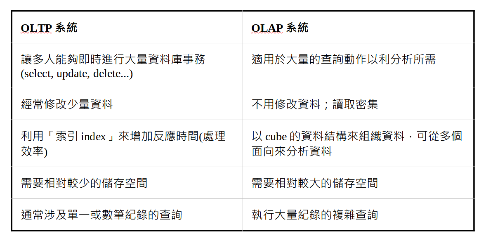
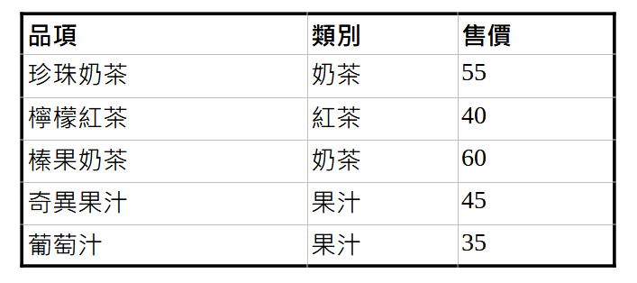
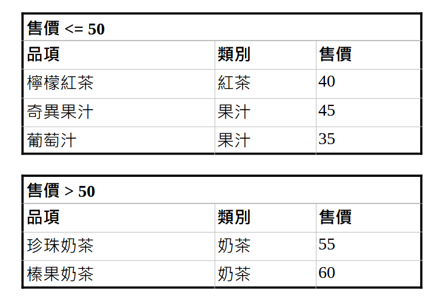
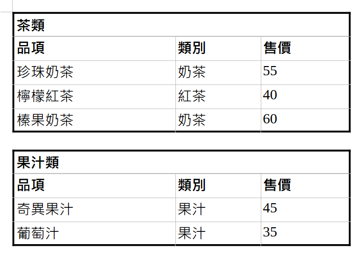

透過Informix了解資料庫相關知識
非主流的資料庫管理系統
因為工作的關係，才接觸到Informix這個資料庫管理系統，不然之前提到資料庫管理系統，大家應該立刻想到的會是MySQL、MariaDB、Oracle Database、MongoDB、Redis之類的系統吧？來看看資料庫管理系統的排名(參考DB-ENGINES的排名)，發現在2022年12月時的排名為第35名。基本上看排名大家應該了不起只會看個前10名，第35名實在是沒什麼人會去注意。
特別適用於OLTP
話雖如此，仔細看了一下它的相關說明，還是有不少值得探討的特點。首先是它的官網提到的：「An embeddable database optimized for OLTP and IoT data.」。這個OLTP是OnLine Transactional Processing的簡稱。提到OLTP就得提到OLAP，下面用個表格來比較一下之間的差異：

基本上，從目的來區分，就能夠清楚的區分OLTP與OLAP。OLTP是為了讓很多人即時的去修改、新增、刪除資料；而OLAP是為了從現有的數據中從各個面向來做分析，好比說有一筆資料是「今年在台灣賣出的SAMSUNG Galaxy Z手機數量是10000台」，那麼就可以從：
- Galaxy Z在各個國家的銷售數量
- 台灣手機銷售總量中它的佔比是多少
- 購買Galaxy Z的消費族群分布(例如：年齡層、性別、地點……等)
使用Sharding來做資料的partitioning
Informix採用的是用Sharding的方式來將過多的資料做拆解然後儲存(partitioning)。先來說說為什麼資料需要做partitioning： 假設一個table有1億筆資料，要對這個table做update, select等等操作時，電腦得先將整個table讀到記憶體中，然後再根據條件(SQL中的where)去找到需要的資料，此時這麼多的資料被塞到記憶體中，想當然的電腦執行的速度就會慢下來。而sharding就是把這個有1億筆資料的table根據特定規則拆成好幾個tables，然後存到不同的database中。被拆開來的各個table其table schema都一樣，只是每個小table存的資料沒那麼多而已。
至於要根據什麼規則來拆開原本的table呢？可以分為兩種方式：
- Range-based partitioning
- Hash partitioning

Range-based partitioning就是根據某個欄位的資料，自己先劃分出一個個區塊，然後再把資料根據區塊的條件塞進各自對應的table中。假設我們以「售價<=50」跟「售價>50」分成兩個區塊，那麼拆開後的表格就變成以下的兩個表格：

若是以Hash-based sharding來拆表格的話，就是先定義一個hash function，然後把特定欄位的值丟進去計算，然後根據運算結果來拆表格。假設一個hash function是這樣的：「若是有出現『茶』這個字的話，就把它歸到『茶類』；若是有出現『汁』這個字的話，就歸類到『果汁類』」，那麼將「品項」的值丟到hash function中做分類，最後會得出兩個表格：

不支援MapReduce
MapReduce是分散式技術的其中一種。它可以分為Map以及Reduce兩個部分。Map就是將工作(或資料)拆成不相干的數份，丟給不同的電腦去處理，最後再透過Reduce把各個獨立的電腦處理結果做統整。能夠實現MapReduce的話對於單個硬體設備的要求就可以不用那麼高，仍然維持一定的運算效果，白話一點就是「團結力量大」。Informix不支援MapReduce，所以對於當作Server的主機需要有一定的規格要求。
小結
綜合以上的特性，可以把Informix這套資料庫管理系統看成是專門用在「多人頻繁的更動資料」這樣的用途上，不適合頻繁的提取資料，更別說是用來做各種的分析。不過透過這篇文章，主要是想要跟大家分享的是資料庫相關知識，未來有更多文章完成後會再與大家分享:-D

國立交通大學材料系奈米科技碩士班畢業(現在應該稱國立陽明交通大學ʕ •ᴥ•ʔ)。雖然非資工相關科系畢業，但本著對資工領域的興趣而開始自學相關知識，目前則專攻網頁相關知識，如HTML5、CSS3、JavaScript、Node.js。以跨領域學習者的角度來介紹資工領域相關的知識，除了加深自己對相關知識的理解，也期望同是跨領域學習的朋友們因為瀏覽我的文章而有更多不一樣的觀點可以參考。